He will not keep still
Work him up the way you would on the take — examine, investigate, treat as you go. Every move costs ward time, and the clock is watching.
He telephoned his sister this evening to say he could not manage on his own any more. She had not seen him for two months. She found him burning hot and drenched through, in a flat with no heating on and the windows shut, thinner than she remembers him, and could not get much sense out of him — so she called an ambulance. He finished a course of antibiotics for a chest infection ten days ago and has been going downhill ever since.
- 1Work him up in stages — history, then examination, then investigations. You can step back to any completed stage to reassess him; the case counts how often you do.
- 2Order investigations in rounds — the clock jumps by the slowest test. Re-examine when results change the picture.
- 3Commit a diagnosis once the results justify it — only then does treatment open. Then prove you can manage it.
Tap to ask. His sister answers what he cannot. Each question costs about 30 seconds.

The core systems are quick. Reach for a focused examination when the story calls for it — choosing the right one is the skill.
Nothing is listed — type the examination you want, the way you'd say it on the ward.
Bedside tests are on the trolley. Everything else is ordered on ICE — type it the way you would at the terminal. Build a round, send it; the clock jumps by the slowest test.
You've called it. Now write the plan — free text, the way you'd write it in the notes. Nothing is listed; what you write is what gets done.
Commit your diagnosis
No list to pick from. Name it the way you'd write it in the notes.
You called it wrong.
Now manage it
You've made the diagnosis. This is what separates safe from dangerous — the decisions, with the evidence behind each.
- Thyroid storm is a clinical diagnosis. Thyroid hormone concentrations do not differentiate it from uncomplicated thyrotoxicosis — plenty of comfortable outpatients walk around with a free T4 of 60. What defines storm is decompensation: the fever, the delirium, the gut and the failing heart. Score it with Burch–Wartofsky (≥45 highly suggestive; his is about 105) or the JTA/JES criteria, and treat while the sample is still in the pod.
- Thionamide first, then iodine, at least an hour later. Iodine blocks the release of stored hormone through the Wolff–Chaikoff effect — but an unblocked gland handed a large iodine load will use it as substrate to make more. The consensus statement's wording is unambiguous: this delay is essential. It is the one sequence in the disease you cannot get backwards.
- Match the beta blocker to the ventricle. Propranolol 60–80 mg four-hourly is the usual first line and has the bonus of blocking T4→T3 conversion. But in heart failure or cardiogenic shock, high doses can precipitate cardiovascular collapse — so esmolol is preferred, because a short half-life means you can switch it off. This is why the guideline asks for early echocardiography.
- Not aspirin. Salicylate displaces thyroid hormone from thyroxine-binding globulin, raising the free fraction — the very thing you are trying to lower. Paracetamol, active cooling, cooled fluids, and chlorpromazine 50–100 mg IM for the agitated, shivering patient, which sedates and drops the temperature at once.
- Not amiodarone. Each 200 mg tablet carries about 75 mg of iodine. Reaching for it to control the rate is pouring substrate onto the fire. Digoxin is not contraindicated but is relatively ineffective here — clearance is increased and the sympathetic drive overwhelms it.
- There is no alpha blockade in thyroid storm. Alpha-then-beta is the phaeochromocytoma sequence, where circulating catecholamines act on both receptor families and unopposed beta blockade risks a hypertensive crisis. In storm there is no catecholamine excess at all: thyroid hormone increases sensitivity to normal catecholamine levels, largely through beta receptors. Beta blockade is first-line and unopposed by design.
- Treat the precipitant. Infection, surgery, trauma, stopping antithyroid drugs, iodinated contrast, childbirth, DKA. His pneumonia is real, and the storm will not settle while the trigger is still burning. Note the second candidate hiding in his history — a contrast CT six weeks ago — and think twice before sending an undiagnosed thyrotoxic patient for a CTPA.
- The fast atrial fibrillation is the consequence, not the cause. Rate control rather than rhythm control; most revert to sinus once euthyroid. Anticoagulation follows standard stroke-risk stratification balanced against bleeding — thyrotoxicosis is not by itself an indication.
- Hydrocortisone earns its place twice. It reduces peripheral T4→T3 conversion and covers the relative adrenal insufficiency of critical illness, and it is particularly effective where Graves' is the cause. Watch the potassium: high-dose glucocorticoid can precipitate thyrotoxic periodic paralysis, classically in young men.
- Expect marked improvement in 24–72 hours. Failure to stabilise by 24–48 hours should prompt reassessment and escalation — cholestyramine, lithium with specialist advice, therapeutic plasma exchange, emergency thyroidectomy in a specialist centre, VA-ECMO for refractory thyrotoxic cardiogenic shock. And do not use TSH to judge early response: it stays suppressed for weeks.
- The quiet lesson is in the GP record. Two attendances for palpitations with a pulse of 124 recorded and no ECG; a "normal" blood panel three months ago that never included a TSH; fifteen kilograms lost in a year, written down and not added up. Thyrotoxicosis had been announcing itself for six months, and the chest infection simply tipped it over.